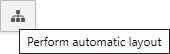
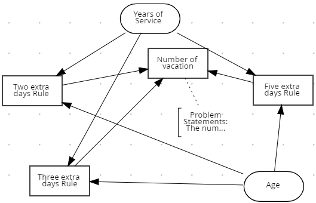
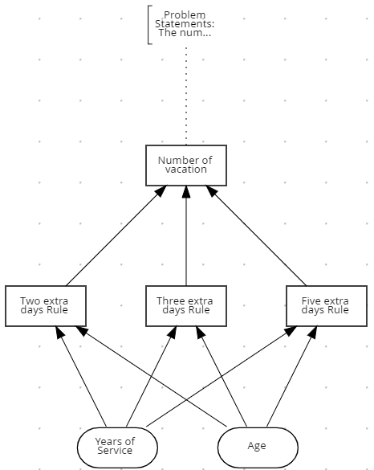

Automatic Layout
One of the biggest vantages of the DMN is that business analysts can visualize the business logic in a way that is also understandable to non-specialists. But sometimes, during the process of getting the knowledge from the head and putting it in a diagram, it may be tricky to layout all the nodes and connections. The knowledge is clear in the business analyst’s mind, but how to make it clear to everyone?
Because of that, our DMN editor tool has the Automatic Layout feature, which can be accessed by the “Perform Automatic Layout” button in the toolbar and can be very handy in this case:

Before:

After:

The provided layout may not be perfect, but it fits all the nodes in layers to reduce edges overlap. It gives a good start point to the user.
Also, this feature is automatically performed when you open a diagram that doesn’t have layout information.
Under the hood
For those interested in the technical details about how this is performed, we used the method called Sugiyama, developed by Kozo Sugiyama, which allows drawing the graph in a layered way.
Basically, what we do is divided into 4 steps:
- Removes cycles in the graph when there’s any present (A → B → C →A);
2. Puts each node in a layer;
3. Positions each node inside its layer;
4. It sets the node position (x, y).
About step 1, you may ask when you add the cycles again. Well, we don’t. We remove the cycles just logically in a reduced copy of the diagram. The value that we use at the end in the real diagram is the position (x, y) of each node.
The cool thing is that for each step, we can use different approaches (algorithms). Thus, the implementation that we have in the DMN tool can be changed depending on the nature of the graph (diagram) that we want to sort or create custom approaches for specific cases. It’s a very flexible technique that allows us to use the base class not only in the DMN but, in the future, in other diagrams in the Business Central.
It also allows us to add custom steps and make adjustments for specific cases, like the Decision Services, which is a large node with other nodes inside. But this is a subject for a future post. :-)
Automatic Layout was originally published in KIE Group — Decision Tooling team on Medium, where people are continuing the conversation by highlighting and responding to this story.